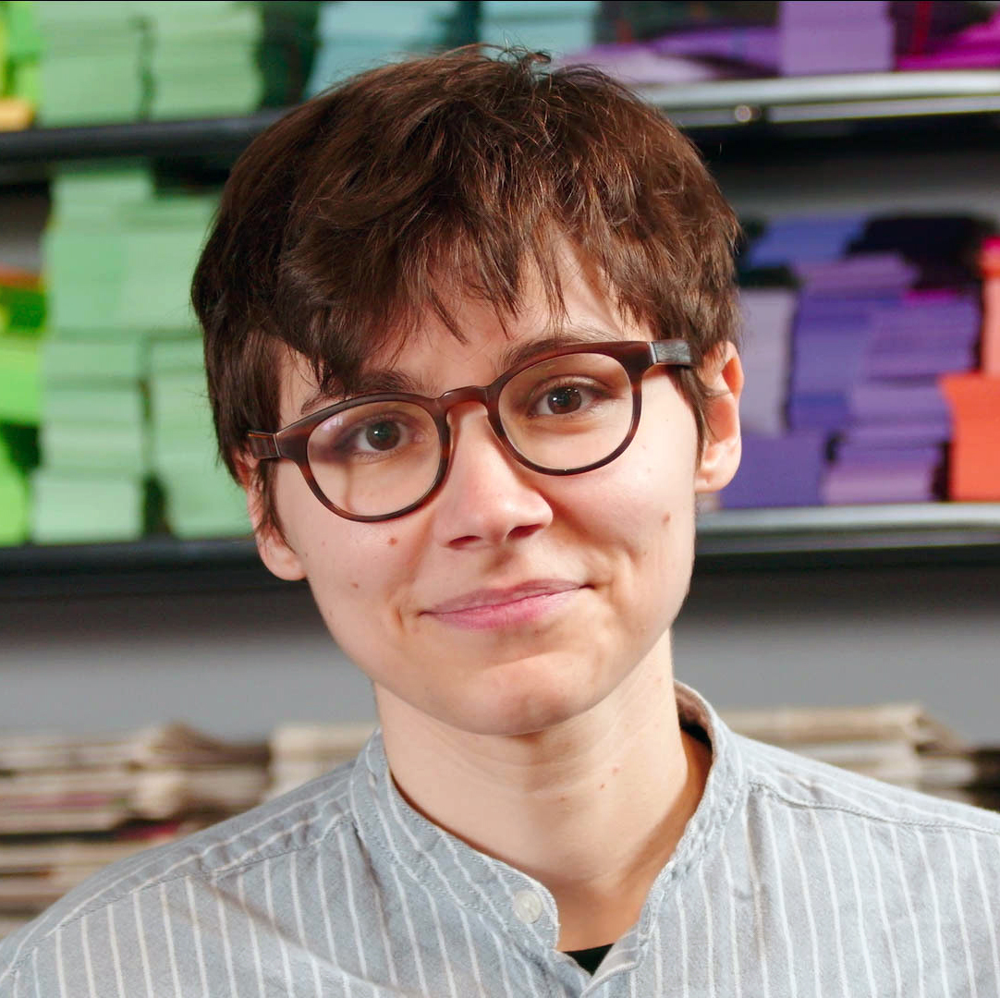

I am a scholar of eighteenth-century and Romantic-era literatures and culture. My research and teaching focus on British literature and history, c.a. 1650-1850; book history, bibliography, and media studies; queer and trans histories; and the history and theory of the novel from its origins to the present. I am currently the 2024-25 Presidential Fellow in Bibliography at the Linda Hall Library in Kansas City, Missouri.
Recently, I’ve been at work on two research projects. The first of these—Ephemeral History: Documentary Form and the Everyday in the British Novel, 1720-1850–rereads the emergence of the British novel in relation to the late 17th- and 18th-century interest in preserving media that had been designed to be quickly discarded. In doing so, this project shows how the novel served as a key site for imagining how to read ephemeral documents like almanacs and newspapers as histories of everyday life.
The second project (tentatively titled “Transitions by the Book: Print and the Making of Gender in 18th- and 19th-century Britain”) connects my research on early media with a broader interest in trans and queer historicisms. More specifically, it traces how notions of authorship and aspects of material texts—including page layout and bibliographical format—functioned as early technologies of gender transition. In exploring this entanglement of print and gender variance, I have two broader aims: to recover and reexamine pre-1850 print productions of individual gender nonconforming authors, and to develop a new, broader account of the gendering of pre-1850 print by combining methods from bibliography and trans studies.
As part of my ongoing research into the transmission and (re)circulation of early materials on gender variance, I have also begun to investigate early 20th century sexologists’ engagement with 18th and 19th century histories of gender nonconformity, as well as efforts made by those in the mid 20th century to disavow such historical engagements in an effort to establish sexology as a ‘purely objective’ science.
Articles related to these ongoing research projects have appeared—or will soon appear—in The Papers of the Bibliographical Society of America, European Romantic Review, and Eighteenth Century: Theory and Interpretation. My other writing can be found in Digital Defoe: Studies in Defoe & His Contemporaries, The Shandean, and the blog of the Keats-Shelley Association of America.